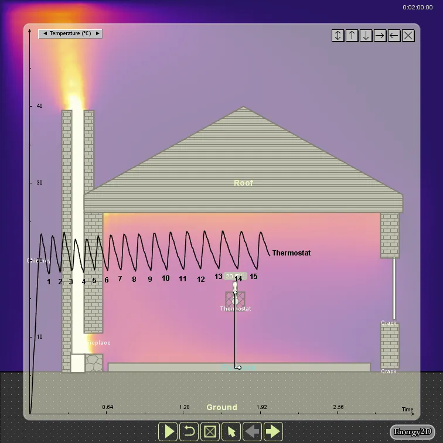
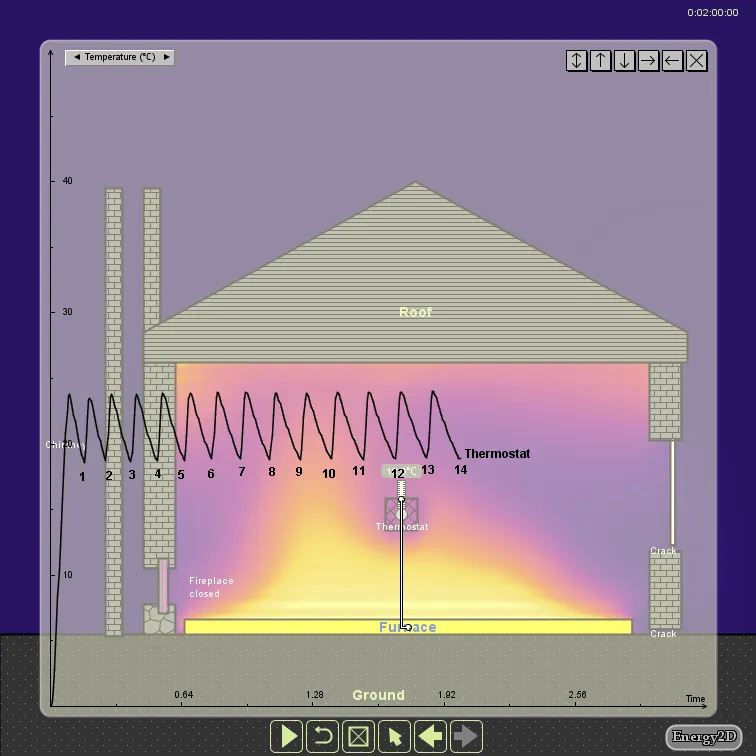
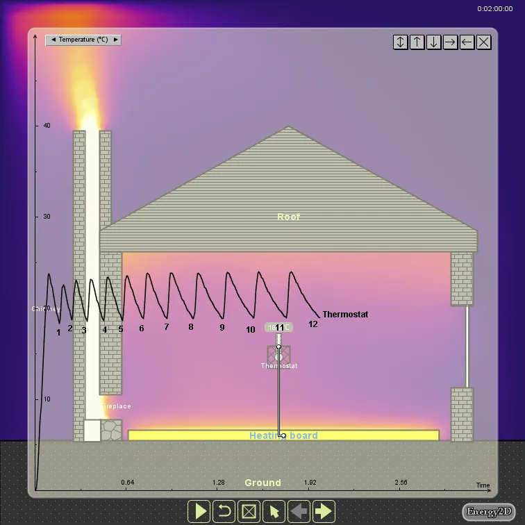

Are Fireplaces at Odd with Energy Efficiency?
By Charles Xie ✉
Listen to a podcast about this article
In the winter, a fireplace is a cozy place in the house when we need some thermal comfort. It is probably something hard to remove from our culture (it is supposed to be the only way Santa comes into your house). But is the concept of fireplace — an ancient way of warming up a house — really a good idea today when the entire house is heated by a modern distributed heating system? In terms of energy efficiency, the advice from science is that it probably isn’t.
When the wood burns, a fireplace creates an updraft force that draws the warm air from the house to the outside through the chimney. This creates a “negative pressure” that draws the cold air from the outside into the house through small cracks in the building envelope. This is called the stack effect. So while you are getting radiation heat from the fireplace, you are also losing heat in the house at a faster rate through convection. As a result, your heating system has to work harder to keep other parts of your house warm.

A house with a fireplace and a heating system controlled by a thermostat
Our Energy2D tool can be used to investigate this because it can simulate both the stack effect and thermostats. Let’s just create a house heated by a heating board on the floor as shown above. The heating board is controlled by a thermostat whose temperature sensor is positioned in the middle of the house. A few cracks were purposely created in the wall on the right side to let the cold air from the outside in. Their sizes were exaggerated in this simulation.

Figure 1: A fire is lit in the fireplace
Figure 1 shows the duty cycles of the heating board within two hours when the house was heated from 0°C to 20°C with a fire lit in the fireplace. A heating run is a segment of the temperature curve in which the temperature increases, indicating the house is being heated. In our simulation, the duration of a heating run is approximately the same under different conditions. The difference is in the durations of the cooling runs. A more drafty house tends to have shorter cooling runs as it loses energy more quickly. Let’s just count those heating runs. Fifteen (15) heating runs were recorded in this case.

Figure 2: No fire
Figure 2 shows the case when there was no fire in the fireplace and the fireplace door was closed. Thirteen (13) heating runs were recorded in this case. This means that, in order to keep the house at 20°C, you actually need to spend a bit more on your energy bill when the fireplace is burning. This is kind of counter-intuitive, but it may be true, especially when you have a large drafty house.

Figure 3: No crack
How do we know that the increased energy loss is due to the cracks? Easy. We can just nudge the window and the wall on the right to close the gaps. Now we have an airtight house. Re-run the simulation shows that only 11 heating runs were recorded (Figure 3). In this case, you can see in Figure 3 that the cooling runs lasted longer, indicating that the rate of heat loss decreased.
Note that this Energy2D simulation is only an approximation. It does not consider the radiation heat gain from the fireplace. And it assumes that the fire would burn irrespective of air supply. But still, it is enough to make a point.
Conclusion
This example demonstrates how useful Energy2D may be for everyone. In creating this simulation, all I did is to drag and drop, change some parameters, run the simulation, and then count the heating runs. It really creates an abundance of learning opportunities for students to experiment with concepts and designs that would otherwise be inaccessible. Similar experiences are currently only possible at college level with expensive professional software.